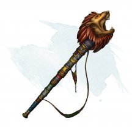
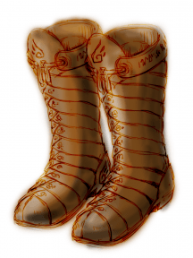
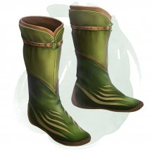
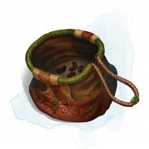

- Доспех (кираса, полулаты, латы), редкий (требуется настройка)
- Рекомендованная стоимость: 501-5 000 зм
Этот магический доспех представляет собой сосуд с расплавленной бронзой. Когда вы настраиваетесь на него, бронза прилипает и очерчивает контуры вашей кожи. Доспех можно носить под обычной одеждой, однако он не мешает жизнедеятельности организма. Как только вы в него облачаетесь, его нельзя будет снять, против вашей воли.
Пока вы облачены в этот доспех, вы получаете сопротивление урону огнём. Доспех не накладывает помеху на проверки Ловкости (Скрытность).
Магические предметы
Официальные материалы от Wizards of the Coast и от издательств, поддерживаемых этой компанией.
- Чудесный предмет, редкий (требуется настройка)
- Рекомендованная стоимость: 501-5 000 зм
Резервуар с аномалией — это сосуд объёмом 10 галлонов (около 38 литров), сделанный из дутого стекла c крышками из чеканной бронзы. К нему приделаны ремни из жёсткой кожи, благодаря чему его можно носить на спине как рюкзак. Внутри резервуара содержится водная аномалия [water weird]. Пока вы носите резервуар, вы можете Действием открыть его, позволив ей выбраться наружу. Она связана с резервуаром и будет действовать сразу после вас в порядке инициативы.
Пока вы носите резервуар, вы можете телепатически отдавать команды водной аномалии (действие не требуется). Вы можете действием закрыть резервуар, но только если до этого приказали аномалии вернуться в резервуар, иначе она погибнет.
Если водная аномалия умирает, резервуар теряет магические свойства до тех пор, пока будет перезаряжен внутри элементального узла воды.
Перезарядка занимает 24 часа, и после неё внутри резервуара появляется новая водная аномалия.
Резервуар имеет КД 15, 50 хитов, уязвимость к дробящему урону и иммунитет к яду и урону психической энергией. Если хиты резервуара опустить до 0, он уничтожается вместе с водной аномалией внутри него.
- Чудесный предмет, редкий
- Рекомендованная стоимость: 501-5 000 зм
Вы можете действием подуть в этот рог. После этого в пределах 60 футов от вас появляются духи воителей из Бездны. Данные духи выглядят как минотавры и используют характеристики берсерков [berserker] из Бестиария. Они возвращаются в Бездну через 1 час, или когда их хиты опускаются до 0. Рог нельзя использовать повторно, пока не пройдёт 7 дней.
Рог призывает 3к4+3 берсерка. Для использования рога, вы должны владеть всеми видами простого оружия.
Если вы подуете в рог, не выполняя требований, призванные берсерки нападут на вас. Если вы выполняете требования, они будут дружественны к вам и вашим спутникам, и будут выполнять ваши команды.

- Чудесный предмет, редкий
- Рекомендованная стоимость: 501-5 000 зм
Вы можете действием произнести командное слово рога и подуть в него, испуская взрыв 30-футовым конусом, слышимый на расстоянии 600 футов. Все существа в конусе должны совершить спасбросок Телосложения Сл 15. При провале существо получает урон звуком 5к6 и становится оглохшим на 1 минуту. При успехе существо получает половину урона и не становится оглохшим. Существа и предметы, изготовленные из стекла или кристаллов, спасбросок совершают с помехой и получают урон звуком 10к6, а не 5к6.
При каждом использовании магии рога существует 20-процентный шанс, что он взорвётся. Взрыв причиняет урон огнём 10к6 тому, кто в него дул, и уничтожает рог.
- Чудесный предмет, редкий (требуется настройка)
- Рекомендованная стоимость: 501-5 000 зм
Действием вы можете подуть в рог и наложить одно из следующих заклинаний: руки Хадара [arms of Hadar], туманное облако [fog cloud], порыв ветра [gust of wind], паутина [web] (Сл спасброска 13).
После того, как рог был использован для наложения заклинания, его нельзя использовать для наложения этого же заклинания до следующего рассвета.
- Чудесный предмет, редкий (требуется настройка членом Гильдии Азориуса)
- Рекомендованная стоимость: 501-5 000 зм
Этот рунный ключ вырезан из белого мрамора и лазурита, чтобы напоминать благородную хищную птицу. Он может превратиться в гигантского орла [giant eagle] на 1 час. Пока этот орел находится в пределах 1 мили от вас, вы можете телепатически с ним общаться. Действием, вы можете до начала вашего следующего хода видеть глазами орла и слышать то же что и он, и вы получаете преимущество его острого зрения. В это время для своих собственных чувств вы слепы и глухи.
Действием, вы можете произнести командное слово и поместить рунный ключ на землю в свободное пространство в пределах 5 футов от вас, рунный ключ превращается в гигантского орла. Если для орла недостаточно места, рунный ключ не трансформируется.
Существо дружелюбно относится к вам, вашим союзникам и другим членам вашей гильдии (если только эти члены гильдии не враждебны к вам). Он понимает ваши языки и подчиняется вашим устным командам. Если вы не отдаете никаких команд, орел совершает действие Уклонения и перемещается, чтобы избегать опасности.
По истечении 1 часа орел возвращается в свою форму рунного ключа. Он возвращается в неё раньше, если его хиты опускаются до 0 хитов или если вы используете Действие, чтобы снова произнести командное слово, прикасаясь к нему. Когда существо возвращается к своей форме рунного ключа, оно не может трансформироваться снова, пока не пройдет 36 часов.
- Чудесный предмет, редкий (требуется настройка членом Гильдии Бороса)
- Рекомендованная стоимость: 501-5 000 зм
Вырезанный из красного песчаника с элементами белого гранита, чтобы напоминать члена Легиона Бороса, этот рунный ключ может превратиться в ветерана [veteran] (человека) на 8 часов. Помимо сражения от вашего имени, этот ветеран активно даёт тактические советы, которые обычно звучат здраво. Любой, кто разговаривает с трансформированным рунным ключем или внимательно изучает его, может легко распознать, что это не настоящий человек.
Действием, вы можете произнести командное слово и поместить рунный ключ на землю в свободное пространство в пределах 5 футов от вас, рунный ключ превращается в ветерана (человека). Если для ветерана недостаточно места, рунный ключ не трансформируется.
Существо дружелюбно относится к вам, вашим союзникам и другим членам вашей гильдии (если только эти члены гильдии не враждебны к вам). Он понимает ваши языки и подчиняется вашим устным командам. Если вы не отдаете никаких команд, ветеран совершает действие Уклонения и перемещается, чтобы избегать опасности.
По истечении 8 часов ветеран возвращается в свою форму рунного ключа. Он возвращается в неё раньше, если его хиты опускаются до 0 хитов или если вы используете Действие, чтобы снова произнести командное слово, прикасаясь к нему. Когда существо возвращается к своей форме рунного ключа, оно не может трансформироваться снова, пока не пройдет 36 часов.
- Чудесный предмет, редкий (требуется настройка членом Гильдии Груул)
- Рекомендованная стоимость: 501-5 000 зм
Этот грубый рунный ключ собран из кусков щебня, битого стекла, костей и шерсти животных. Один его конец напоминает рогатого зверя. По команде рунный ключ превращается в цератока [rhinoceros], рогатое существо, очень похожее на носорога (и с теми же характеристиками). Он остается в своем виде цератока на протяжении 1 часа.
Действием, вы можете произнести командное слово и поместить рунный ключ на землю в свободное пространство в пределах 5 футов от вас, рунный ключ превращается в цератока. Если для цератока недостаточно места, рунный ключ не трансформируется.
Существо дружелюбно относится к вам, вашим союзникам и другим членам вашей гильдии (если только эти члены гильдии не враждебны к вам). Он понимает ваши языки и подчиняется вашим устным командам. Если вы не отдаете никаких команд, цераток совершает действие Уклонения и перемещается, чтобы избегать опасности.
По истечении 1 часов цераток возвращается в свою форму рунного ключа. Он возвращается в неё раньше, если его хиты опускаются до 0 хитов или если вы используете Действие, чтобы снова произнести командное слово, прикасаясь к нему. Когда существо возвращается к своей форме рунного ключа, оно не может трансформироваться снова, пока не пройдет 36 часов.
- Чудесный предмет, редкий (требуется настройка членом Гильдии Иззет)
- Рекомендованная стоимость: 501-5 000 зм
Сделанный из резного и полированного красного и синего камня, рунный ключ включает в себя кусочки кабелей и проводов. Один конец напоминает человеческую голову, напоминающую зазубренные формы элементаля - гальванической аномалии [galvanice weird], которой он может стать на следующие 3 часа. В этой форме он будет служить вам телохранителем, поднимать и переносить вещи для вас, выступать в качестве испытуемого для ваших экспериментов или помогать вам любым другим способом, по мере своих возможностей.
Действием, вы можете произнести командное слово и поместить рунный ключ на землю в свободное пространство в пределах 5 футов от вас, рунный ключ превращается в гальваническую аномалию. Если для аномалии недостаточно места, рунный ключ не трансформируется.
Существо дружелюбно относится к вам, вашим союзникам и другим членам вашей гильдии (если только эти члены гильдии не враждебны к вам). Он понимает ваши языки и подчиняется вашим устным командам. Если вы не отдаете никаких команд, гальваническая аномалия совершает действие Уклонения и перемещается, чтобы избегать опасности.
По истечении 3 часов гальваническая аномалия возвращается в свою форму рунного ключа. Он возвращается в неё раньше, если его хиты опускаются до 0 хитов или если вы используете Действие, чтобы снова произнести командное слово, прикасаясь к нему. Когда существо возвращается к своей форме рунного ключа, оно не может трансформироваться снова, пока не пройдет 36 часов.
- Чудесный предмет, редкий (требуется настройка членом Гильдии Орзов)
- Рекомендованная стоимость: 501-5 000 зм
Этот рунный ключ вырезан из белого мрамора с чёрными прожилками. Окончание имеет форму головы трулла с прикрепленной золотой лицевой пластиной. По команде рунный ключ превращается в крылатого трулла [winged thrull] на 2 часа. Если вы не выходец из олигархической семьи Орзовых, то он служит вам неохотно, клоунски подражая вашим движениям и манерам при выполнении ваших приказов.
Действием, вы можете произнести командное слово и поместить рунный ключ на землю в свободное пространство в пределах 5 футов от вас, рунный ключ превращается в крылатого трулла. Если для трулла недостаточно места, рунный ключ не трансформируется.
Существо дружелюбно относится к вам, вашим союзникам и другим членам вашей гильдии (если только эти члены гильдии не враждебны к вам). Он понимает ваши языки и подчиняется вашим устным командам. Если вы не отдаете никаких команд, крылатый трулл совершает действие Уклонения и перемещается, чтобы избегать опасности.
По истечении 2 часов крылатый трулл возвращается в свою форму рунного ключа. Он возвращается в неё раньше, если его хиты опускаются до 0 хитов или если вы используете Действие, чтобы снова произнести командное слово, прикасаясь к нему. Когда существо возвращается к своей форме рунного ключа, оно не может трансформироваться снова, пока не пройдет 36 часов.
- Чудесный предмет, редкий (требуется настройка членом Гильдии Селезнии)
- Рекомендованная стоимость: 501-5 000 зм
Вырезанный из белого и зеленого мрамора в форме волчьей головы, этот рунный ключ превращается в лютого волка [dire wolf] на 8 часов. Его Интеллект равен 6, и он понимает Эльфийский и Сильван, но не может говорить на этих языках. Пока он находится в пределах 1 мили от вас, вы можете общаться друг с другом телепатически.
Действием, вы можете произнести командное слово и поместить рунный ключ на землю в свободное пространство в пределах 5 футов от вас, рунный ключ превращается в лютого волка. Если для волка недостаточно места, рунный ключ не трансформируется.
Существо дружелюбно относится к вам, вашим союзникам и другим членам вашей гильдии (если только эти члены гильдии не враждебны к вам). Он понимает ваши языки и подчиняется вашим устным командам. Если вы не отдаете никаких команд, лютый волк совершает действие Уклонения и перемещается, чтобы избегать опасности.
По истечении 8 часов лютый волк возвращается в свою форму рунного ключа. Он возвращается в неё раньше, если его хиты опускаются до 0 хитов или если вы используете Действие, чтобы снова произнести командное слово, прикасаясь к нему. Когда существо возвращается к своей форме рунного ключа, оно не может трансформироваться снова, пока не пройдет 36 часов.

- Чудесный предмет, редкий (требуется настройка)
- Рекомендованная стоимость: 501-5 000 зм
Если вы носите эти сапоги, вы можете неограниченно действием накладывать на себя заклинание левитация [levitate].

- Чудесный предмет, редкий (требуется настройка)
- Рекомендованная стоимость: 501-5 000 зм
Пока вы носите эти сапоги, вы можете бонусным действием щёлкнуть каблуками. Если вы делаете это, то сапоги удваивают вашу скорость ходьбы, а все существа, совершающие по вам провоцированные атаки, совершают броски атаки с помехой. Если вы щёлкнете каблуками повторно, вы прекращаете действие эффекта.
Если свойства этих сапог использовались в общей сложности 10 минут, магия перестаёт работать, пока вы не закончите продолжительный отдых.
- Чудесный предмет, редкий (требуется настройка)
- Рекомендованная стоимость: 501-5 000 зм
Эта пара сапог сделана из прочной ткани, а руна «Путешествие» вышита золотой нитью над каждой пяткой. Пока вы носите этот предмет, ваша скорость ходьбы увеличивается на 10 футов, и вы совершаете с преимуществом проверки Мудрости (Выживание).
Пробуждение рун. Бонусным действием вы можете пробудить руны ботинок, чтобы с их помощью наложить заклинание поспешное отступление [expeditious retreat]. После того, как руны были пробуждены, они не могут быть пробуждены снова до следующего рассвета.
- Чудесный предмет, редкий (требуется настройка волшебником)
- Рекомендованная стоимость: 501-5 000 зм
Эта книга заклинаний в кожаном переплёте укреплена железной и серебряной фурнитурой и железным замком (Сл 20 для открытия). Действием вы можете коснуться обложки книги и заставить её закрыться, как если бы вы наложили на неё заклинание волшебный замок [arcane lock]. Найденная книга содержит следующие заклинания: волшебный замок [arcane lock], защита от зла и добра [protection from evil and good], знак [symbol], кабинет Морденкайнена [Mordenkainen’s private sanctum], охранные руны [glyph of warding], рассеивание магии [dispel magic] и сфера неуязвимости [globe of invulnerability]. Эта книга функционирует для вас как книга заклинаний.
Когда вы держите книгу, вы можете использовать её в качестве заклинательной фокусировки для ваших заклинаний волшебника.
Книга имеет 3 заряда и ежедневно восстанавливает 1к3 заряда на рассвете. Вы можете использовать заряды следующими способами, пока держите книгу:
- Если вы потратите 1 минуту на изучение книги, вы можете израсходовать 1 заряд и заменить одно из своих подготовленных заклинаний волшебника на другое заклинание из книги. Новое заклинание должно принадлежать школе Ограждения.
- Когда вы накладываете заклинание школы Ограждения, вы можете потратить 1 заряд, чтобы дать существу, которое вы можете видеть в пределах 30 футов, 2к10 временных хитов.
- Оружие (любой лук), редкое (требуется настройка)
- Рекомендованная стоимость: 501-5 000 зм
На этом серебряно-черном луке выгравированы фазы луны. Вы получаете бонус +1 к броскам атаки и урона, совершённым этим магическим оружием.
Когда вы попадаете по существу атакой совершенной этим магическим луком, цель дополнительно получает 1к6 урона излучением. Если вы не вкладываете боеприпас в оружие, оно производит свой собственный, автоматически создавая один магический боеприпас, когда вы натягиваете тетиву. Боеприпас, создаваемый луком, исчезает в тот момент, когда он попадает в цель или промахивается.
Держа этот волшебный лук, вы можете бонусным действием войти в полубестелесное состояние до начала вашего следующего хода. Будучи полубестелесным, вы получаете сопротивление к дробящему, колющему и рубящему урону. После того, как это бонусное действие будет использовано, его нельзя будет использовать снова до следующего рассвета.
- Чудесный предмет, редкий
- Рекомендованная стоимость: 501-5 000 зм
Этот набор из 1к4 + 2 маленьких баночек с краской содержит пигменты, смешанные из измельченных люминесцентных драгоценных камней. Эта волшебная краска дарует временные магические дары существам, на коже которых этой краской нанесены руны.
В одном горшке с краской достаточно пигмента, чтобы нарисовать одну руну. Существо может потратить 10 минут, чтобы нарисовать одну из следующих рун на себе или другом существе:
Руна «Путешествие». Труднопроходимая местность не требует дополнительного движения от существа с руной.
Руна «Жизни». Существо получает 10 временных хитов и совершает спасброски от смерти с преимуществом.
Руна «Свет». Существо получает тёмное зрение в радиусе 30 футов. Если существо получившее руну уже имеет темное зрение из другого источника, дальность его темного зрения увеличивается на 30 футов.
Руна «Гора». Существо получает иммунитет к сбиванию с ног и совершает с преимуществом спасброски Силы и Телосложения.
Руна «Щит». Существо совершает с преимуществом спасброски Ловкости против эффектов, наносящих урон.
Существо может получить выгоду только от одной нарисованной руны за раз, поэтому новая руна, нарисованная на существе, не имеет никакого эффекта, если старая не будет удалена первой. Преимущества руны действуют в течение 8 часов или до тех пор, пока нарисованное существо не сотрёт руну действием.

- Свиток, редкий
- Рекомендованная стоимость: 251-2 500 зм
Каждый свиток защиты работает против какого-то одного определённого вида существ, выбранного Мастером самостоятельно или же случайным образом с помощью приведённой ниже таблицы.
к100 Вид существ 01-10 Аберрации 11-20 Звери 21-45 Исчадия 46-55 Небожители 56-75 Нежить 76-80 Растения 81-90 Феи 91-00 Элементали Прочитав действием свиток, вы окружаете себя невидимым барьером, формирующим цилиндр с радиусом 5 футов и высотой 10 футов. В течение 5 минут этот барьер препятствует созданиям определённого вида входить в цилиндр и каким-либо образом воздействовать на то, что заключено в него.
Этот цилиндр перемещается вместе с вами, оставаясь с центром на вас. Однако, если вы перемещаетесь так, что существо указанного вида окажется внутри цилиндра, защитный эффект заканчивается.
Существо может попытаться преодолеть барьер, совершив действием проверку Харизмы Сл 15. При успехе барьер на это конкретное существо не действует.
- Оружие (боевая кирка), редкое (требуется настройка)
- Рекомендованная стоимость: 501-5 000 зм
Рукоять этого клевца инкрустирована измельченными перламутровыми камнями, которые придают оружию слабое свечение. Вы получаете бонус +1 к броскам атаки и урона, совершённых с помощью этого клевца.
Удерживая клевец, вы можете бонусным действием наложить заклинание дневной свет [daylight], выбрав точкой на клевце. Использовав это бонусное действие, его нельзя будет использовать снова до следующего рассвета.

- Чудесный предмет, редкий
- Рекомендованная стоимость: 501-5 000 зм
Этот предмет выглядит как деревянная коробка 12 дюймов в длину, 6 дюймов в ширину и 6 дюймов в высоту (30×15×15 сантиметров). Коробка весит 4 фунта и держится на плаву. Её можно открывать и хранить внутри вещи. У этого предмета есть три командных слова, и каждое из них произносится действием.
Первое командное слово разворачивает коробку в лодку 10 футов в длину, 4 фута в ширину и 2 фута в высоту (3×1,2×0,6 метров). У лодки есть пара вёсел, якорь, мачта и треугольный парус. В этой лодке с комфортом разместятся четыре существа Среднего размера.
Второе командное слово разворачивает коробку в корабль 24 фута в длину, 8 футов в ширину и 6 футов в высоту (7,3×2,4×1,8 метров). У корабля есть палуба, скамьи для гребли, пять пар вёсел, кормовое весло, якорь, палубная каюта и мачта с прямым парусом. На корабле с комфортом разместятся пятнадцать существ Среднего размера.
Если коробка стала судном, оно весит как обычное судно его размера, а всё, что хранилось в коробке, остаётся на судне.
Третье командное слово превращает судно в коробку, при условии, что на борту нет существ. Все предметы на судне, не помещающиеся в коробке, остаются вне коробки, когда та складывается. Все предметы на судне, которые могут поместиться в коробке, оказываются в коробке.

- Оружие (длинный меч), редкое (требуется настройка)
- Рекомендованная стоимость: 501-5 000 зм
Этот предмет выглядит как рукоять длинного меча. Держа эту рукоятку, вы можете бонусным действием заставить появиться или исчезнуть клинок из чистого сияния. Пока клинок существует, этот магический длинный меч обладает свойством «фехтовальное». Если вы владеете коротким или длинным мечом, то вы владеете солнечным клинком.
Вы получаете бонус +2 к броскам атаки и урона, совершённым этим оружием, и причиняете не рубящий урон, а урон излучением. Если вы попадаете им по нежити, цель получает дополнительный 1к8 урона излучением.
Клинок этого меча испускает яркий свет в радиусе 15 футов и тусклый свет в радиусе ещё 15 футов. Это солнечный свет. Пока клинок существует, вы можете действием увеличить или уменьшить радиус и яркого и тусклого света на 5 футов каждый, с максимумом 30 футов и минимумом 10 футов для каждого.
- Оружие (боевой молот), редкое (требуется настройка)
- Рекомендованная стоимость: 501-5 000 зм
Вы получаете бонус +2 к броскам атаки и урона, совершённым этим магическим оружием.
Действием вы можете метнуть оружие на расстояние до 120 футов в точку, которую вы можете видеть. Когда молот достигает этой точки, он самоуничтожится, взрываясь, каждое существо в сфере с радиусом 20 футов, центрированной в этой точке, должно совершить спасбросок Ловкости Сл 15, получая 6к6 урона огнём при провале или вдвое меньше урона при успехе. После этого вы можете действием заставить оружие снова появиться в вашей пустой руке. Вы не можете заставить его взорваться снова, пока не закончите короткий или продолжительный отдых.
Если вы не вызываете его обратно в свою руку, то молот появляется в том месте, где он взорвался, когда ваша настройка на него заканчивается или по прошествии 24 часов.
- Посох, редкий (требуется настройка Жрецом, Друидом или Волшебником)
- Рекомендованная стоимость: 501-5 000 зм
По этому деревянному посоху проходят прожилки солнечного камня. Этот посох можно использовать как магический боевой посох, предоставляющий бонус +1 к броскам атаки и урона им. Когда вы попадаете броском атаки, совершённой с помощью этого посоха, цель дополнительно получает 1к8 урона огнём.
Солнечная фокусировка. Вы можете использовать этот посох в качестве заклинательной фокусировки. Держа посох, вы можете перебросить количество костей урона равное вашему бонусу мастерства, когда используете ячейку заклинаний, чтобы наложить заклинание, наносящее урон огнем или излучением. Вы обязаны использовать новые результаты. Как только это свойство будет использовано, его нельзя будет использовать снова до следующего рассвета.
Солнечное сияние. Бонусным действием вы можете заставить посох сиять солнечным светом. Пока посох сияет, он излучает яркий свет в пределах 15 футов и тусклый свет еще на 15 футов. Посох сияет до тех пор, пока вы бонусным действием не погасите его.

- Чудесный предмет, редкий
- Рекомендованная стоимость: 501-5 000 зм
Внутри этой тяжёлой тканой сумки находятся 3к4 сухих боба. Сумка весит 1/2 фунта, плюс 1/4 фунта за каждый боб, находящийся внутри.
Если вы высыпаете содержимое сумки на землю, то они взрываются с радиусом 10 футов. Все существа в этой зоне, включая вас, должно совершить спасбросок Ловкости Сл 15, получая урон огнём 5к4 при провале или половину этого урона, если спасбросок был успешен. Этот огонь также поджигает легковоспламеняющиеся объекты в зоне поражения, которые никто не несёт и не носит.
Если вы извлечёте боб из сумки, посадите его в землю или песок и затем польёте его, то боб спустя 1 минуту после того, как вы посадили его, произведёт некоторый эффект. Мастер может сам выбрать эффект из таблицы, может определить эффект случайным образом, или же придумать свой вариант.
к100 Эффект 01 Вырастают 5к4 поганок. Если существо съедает поганку, то необходимо бросить любую кость для определения эффекта. При выпадении нечётного числа существо должно преуспеть в спасброске Телосложения Сл 15, иначе оно получит урон ядом 5к6 и становится отравленным на 1 час. Если же выпадет чётное число, то существо получает 5к6 временных хитов на 1 час. 02-10 Появляется гейзер, фонтанирующий на высоту 30 футов потоками воды, пива, ягодного сока, чая, уксуса или масла (по выбору Мастера) в течение 1к12 раундов. 11-20 Появляется трент [treant]. Существует 50-процентный шанс, что появившийся трент будет обладать хаотично-злым мировоззрением и нападёт. 21-30 Появляется ожившая, но неподвижная каменная статуя, похожая на вас и выкрикивающая в ваш адрес угрозы. Если вы уходите от неё, а кто-то другой приближается к ней, статуя описывает вас как самого гнусного злодея и побуждает новоприбывших найти и атаковать вас. Если вы находитесь с ней на одном плане существования, то статуя знает ваше местоположение. По прошествии 24 часов статуя перестаёт быть ожившей. 31-40 Появляется походный костёр с синими языками пламени ,который горит в течение 24 часов (или пока не будет погашен). 41-50 Вырастают 1к6 + 6 визгунов [shrieker]. 51-60 Наружу выползают 1к4 + 8 ярко-розовых жаб. Всякий раз, когда кто-либо прикасается к жабе, та превращается в монстра (размером вплоть до Большого) по выбору Мастера. Этот монстр существует в течение минуты, после чего исчезает в клубах ярко-розового дыма. 61-70 Из норы выползает голодная панцирница [bulette] и немедленно нападает. 71-80 Вырастает фруктовое дерево. На дереве растёт 1к10 + 20 фруктов, 1к8 из которых действуют как магические зелья (определяются случайным образом), в то время, как один из фруктов, будучи съеденным, действует как пищевой яд на выбор Мастера. Дерево исчезает спустя 1 час. Сорванные фрукты остаются, сохраняя свои магические свойства в течение 30 дней. 81-90 Появляется гнездо, содержащее 1к4 + 3 яиц. Существо, съедающее одно из этих яиц, должно совершить спасбросок Телосложения Сл 20. При успехе существо навсегда увеличивает на единицу значение своей самой низкой характеристики. Если две или более характеристики имеют минимальное значение, то случайно выбирается какая-либо одна. При провале существо получает урон силовым полем 10к6 от внутреннего взрыва магической природы. 91-99 Вверх возносится пирамида с квадратным основанием 60 × 60 футов. Внутри неё находится саркофаг с покоящейся в нём лордом-мумией [mummy lord]. Эта пирамида считается логовом лорда-мумии, а в саркофаге находится сокровище на усмотрение Мастера. 00 Вырастает гигантский бобовый стебель такой высоты, какой будет угодно Мастеру. Мастер также решает, что ждёт добравшегося до его вершины персонажа: ему откроется величественный вид, он окажется в замке облачного великана [cloud giant] или же вершина стебля приведёт его на другой план существования.
- Чудесный предмет, редкий
- Рекомендованная стоимость: 501-5 000 зм
Каждая такая сфера профессора имеет форму гладкой, твердой сферы весом в 5 фунтов из дымчато-серого кварца размером с грейпфрут. При ближайшем рассмотрении обнаруживаются два и более серебристых огонька глубоко внутри сферы.
Сфера профессора обладает разумом и личностью ученого. Его мировоззрение определяется броском по таблице «Мировоззрение разумных магических предметов». В независимости от результата, у сферы Интеллект 18, а Мудрость и Харизма определяется броском 3к6 для каждой. Сфера говорит, читает и понимает четыре языка, нормально видит и слышит на расстоянии до 60 футов. В отличие от большинства разумных предметов, сфера не имеет своей воли и не может инициировать конфликт с владеющим ею существом.
Сфера профессора обладает обширными знаниями по четырем узким академическим предметам. При выполнении проверки Интеллекта для того, чтобы вспомнить что-либо из любой своей области знаний, сфера профессора имеет бонус +9 к своему броску (включая модификатор Интеллекта).
В дополнение к знаниям, которыми она обладает, сфера профессора может неограниченное количество раз накладывать заговор волшебная рука [mage hand] для собственного перемещения. Базовая характеристика заклинаний у сферы - Интеллект.